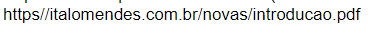

Internet
INTERNET: O segundo tópico que mais gostei foi sobre a internet, pois foi algo que revolucionou o mundo, em diversos sentidos como por exemplo na comunicação, nas pesquisas, na democratização do conhecimento, na parte da economia global e diversos outros. E nesse capitulo da apostila a gente pôde ver o quão complexo é essa arquitetura e a sua distribuição pelo mundo, usando satélites, cabos marítimos etc. A gente pôde ver como uma mensagem daqui do brasil pode chegar do outro lado do mundo em questão de segundos, pudemos ver como é feita a segurança, e a estrutura dos sites, então por isso eu o selecionei como um dos capítulos mais legais de se estudar.
• Podemos ver a infraestrutura que mostra os backbones internacionais que são cabos submarinos que interligam os continentes e países.
• podemos ver como é feita e quais são as partes de uma URL
(Uniform Resource Locator)
URL seguinte por exemplo:

É dividida em:
• https : protocolo usado na transferência dos arquivos
• italomendes.com.br : mnemônico do site (domínio)
• novas : diretório dentro do servidor Web
• introducao.pdf : nome do documento, que está dentro do diretório "novas"